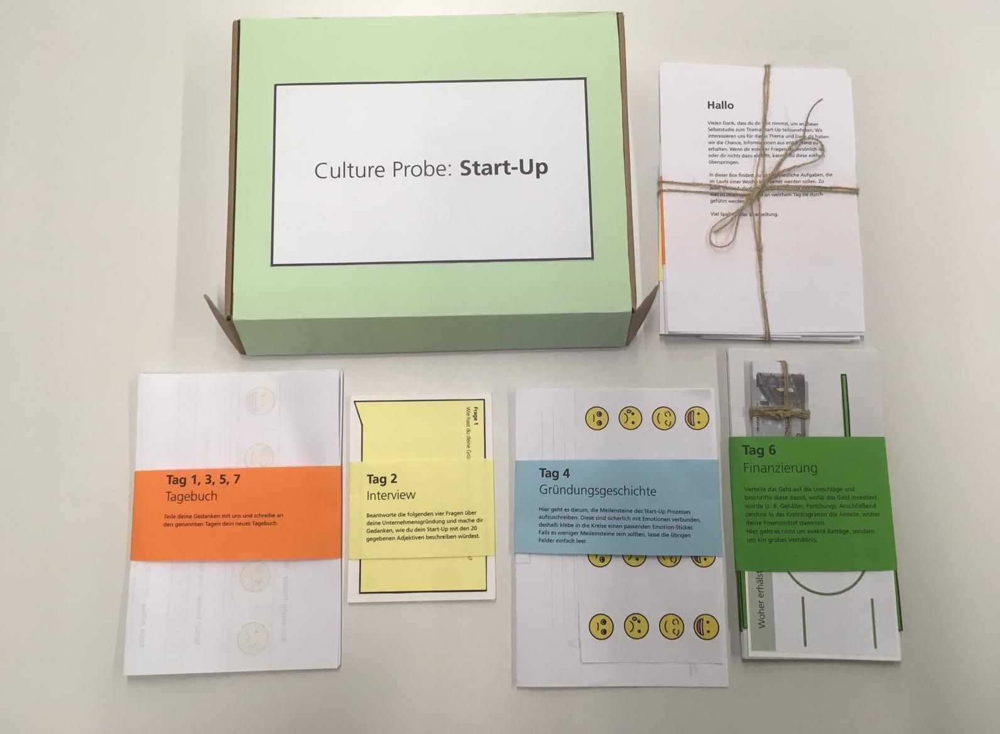

Deeper insights in my design prozess
The design thinking process is a great approach for an elaborated project. I want to use this page
to give you deeper insights into my proceedings and show you a selection of the methods which often
support me and my teams to get to our goal. Across all those steps it is important to say that it is
never a straight process. We sometimes have to jump back and forth and often iterate individual steps.
And in general not every method fits into every project. It is also our task to evaluate which ones
will be the most productive ones for this specific case.
01 Empathy
As a first step I want to know who I am designing for and realize / feel the needs of my users.
02 Synthesis


After a period of research, I often feel overwhelmed by the amount of insights I did collect. The above stated methods are an immense help to identify the most important aspects and to sharpen your perspective.
03 Ideation

At this point we already know which problem we want to solve. But how will we do it? It is time to widen our minds again and to allow every crazy thought that comes in our mind. Nothing is too unrealistic or too insane. The base of the final idea or solution lies in all of them.
04 Prototype


After defining the solution, it is finally time to get not just visual but also make the project come alive. With these methods we form a perfect foundation for following user tests.
05 Test
Now it is time to find out which aspects of our prototype or concept in general pass the inspection of our users. It is always important to clarify the users about the fact that we are testing our product, not them and that they can not do anything wrong. If something does not work out, it is a weakness of the product. With this precious insights we can iterate our product until it is finally well-engineered.
©Valerie Grappendorf 2019 Impressum